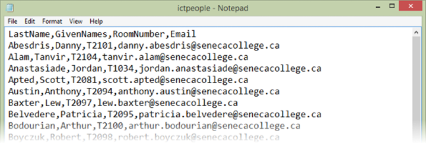
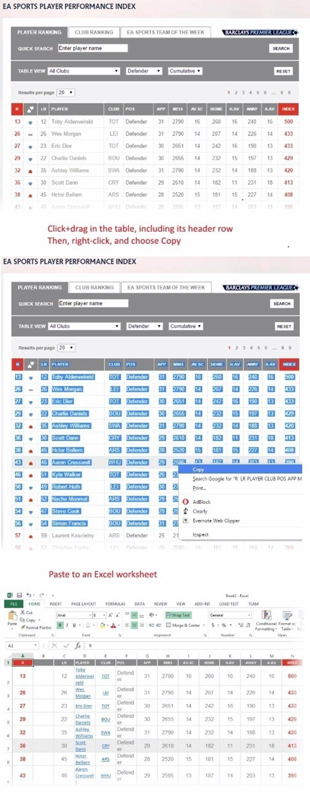
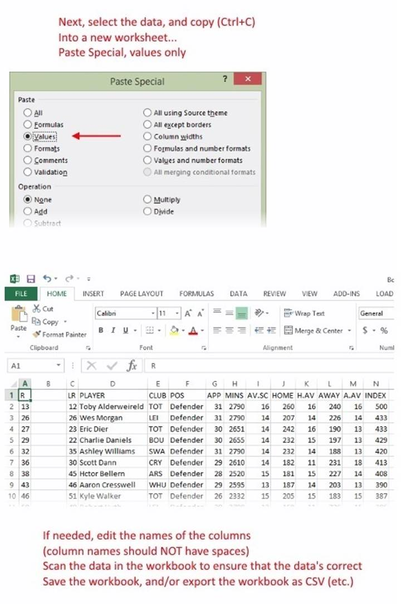
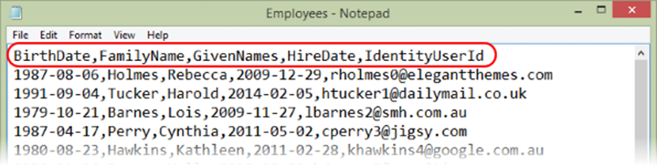
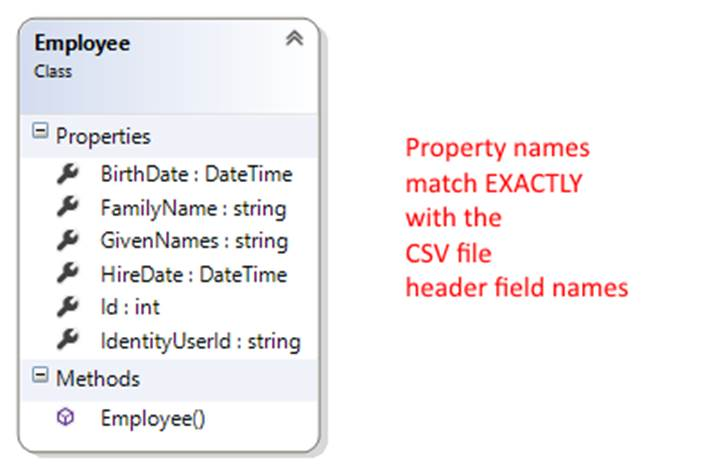
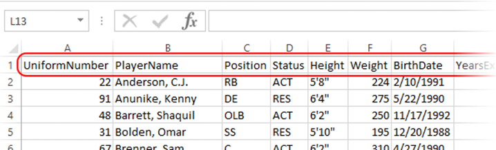
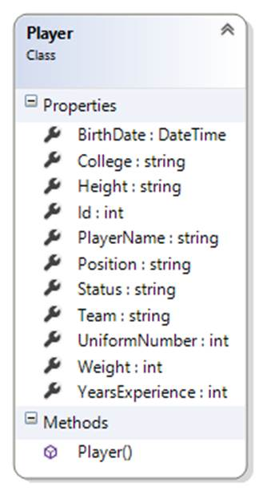
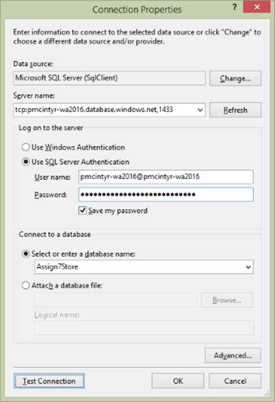
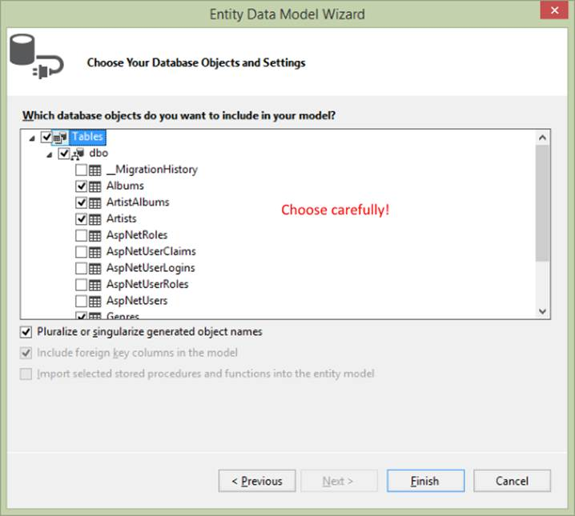

INT422 – Lecture 12
Initial or bulk load of data from CSV and XLSX. Discussion of other scenarios.
Test today
Test 11 is today, at the beginning of the timeslot, and will run approximately 18 minutes.
This is the final INT422 test of the academic term. It will ask questions about today’s topics, and those from this week 12 class notes.
Code examples
Load Data From CSV
Load Data From XLSX
Theme for this week
New web apps often need vast amounts of data before they’re deployed. Existing web apps sometimes need additional data to support a new feature.
Today, you’ll learn how to think about this data loading task. We’ll cover some techniques for common data-loading scenarios.
What is the problem?
Assume that we’re designing and creating a web app. It needs data – vast amounts of data – before it’s publicly deployed to the user community.
In the past, you have used project templates that included an existing data store, with thousands of objects. Then, you have used other project templates that enabled you to define your own data model. In that situation, you probably created – programmatically – a few data items for the app, and enabled others to be created as part of the app’s workflow (using HTML Forms for example).
Yes, programmatically creating new objects is easy, and easy to understand. Not well suited however, for creating hundreds or thousands of objects.
How do we design a data loading solution?
To design a data loading solution, we must answer these fundamental questions (and maybe others):
- Where is the source data?
- What is the format of the source data?
- Do we want the source data to be located within the project’s file system?
Where is the source data?
Where is the source data? In a file in the file system? On the web? In a database?
Answering this question, and understanding its implications, is the most important idea.
For example, maybe you have a comma-separated values file (CSV).

Or an Excel workbook file (XLSX).

These kinds of files will be studied and used in today’s notes and code examples.
Alternatively, maybe the data is on the web. Maybe it’s on web pages, displayed in an HTML table. If that’s the situation, it can often by manually extracted with a drag-and-drop “select” action, copied, and pasted to a destination. Microsoft Excel can be a useful tool for this purpose, as it is nicely-equipped to receive pasted HTML table data.


Or, maybe the data is in a web API (aka a web service). This can be a good thing – as long as you know how to programmaticaly access a web service – because the data is ready to be requested and used.
Finally, maybe the data is in an existing database. We did use this approach for many weeks in the early part of this course (by using the Chinook music business database). However, for a new app, maybe you have another database.
What is the format of the source data?
Is the source data in a form that we can use?
Depending on its format, source data can be used with a small amount of conversion or transformation. Other data formats need more work before it can be used and loaded.
In general, your goal should be to get or transform the data into a rows-and-columns format that makes it easier to understand, and then process on a row-by-row basis.
Do we want the source data to be located within the project’s file system?
Sometimes, it can make sense to copy-paste a data source file into the project’s file system (using the Visual Studio Solution Explorer panel). When you do this, your program code can reference and use the file system, because you know exactly where it is.
At other times, you will need to allow the user (admin or developer) to select and use the data source at runtime. When you do this, you will need some UI that has a file upload element, and logic that saves the file in the web app’s file system, so that it can be processed.
Too many answers – how to organize them
We have created a table that attempts to organize the many different ways to approach this problem.
|
Source data location |
Source data format |
Solution or problem-solving approach |
|
Database server |
SQL database |
Code First from database task in Visual Studio |
|
(none/new) |
In-memory objects |
Programmatically create and add new objects |
|
(none/new) |
HTML Form |
Part of the web app, then programmatically create and add new objects |
|
CSV |
CSV handler: TextFieldParser (in the framework) or CsvHelper (add-on) |
|
|
Project’s file system |
CSV |
CSV handler (covered today) |
|
Computer’s file system |
CSV |
HTML Form to upload the file, then CSV handler |
|
XLSX |
Excel handler: Microsoft Office interop, or Microsoft OLE DB reader, or ExcelDataReader (add-on) |
|
|
Project’s file system |
XLSX |
Excel handler (covered today) |
|
Computer’s file system |
XLSX |
HTML Form to upload the file, then Excel handler |
|
Web service |
JSON (usually) |
HttpClient (in the framework), then programmatically create and add new objects |
|
Web page |
HTML table (usually) |
Select table content, copy, paste to Excel, then clean up in Excel by removing formatting |
|
Project’s file system |
Image / photo |
(Assuming that we’re loading the image/photo into the data store / database…) File.ReadAllBytes() method |
|
Web page |
URL to an image / photo |
Get bytes with HttpClient; then, save in the web app’s file system, or in its data store (database) |
In general, when loading data, continue to use the approach that we have used for the past several weeks:
- In the Manager class, create one-or-more methods that will load data
- In a controller, create an action/method that will call the method in the manager object
In the following sections, we cover a few popular and useful ways to load data into your web app.
CSV handler – CsvHelper add-on by Josh Close
Programmer Josh Close has created a very nice tool that enables you to create objects and collections from a CSV file.
The project is here. Its documentation is here.
To use it, we need data in a CSV file. Its first-line header field names are important. They should NOT have spaces. They will be used to match to property names in a design model class.
❝Tip or strategy:
If your design model class has property names that you like and intend to use, then make sure that the CSV file first-line header field names match EXACTLY to the property names in the design model class.
This enables the data reader/importer to do its work on one pass, and avoids the need to do custom mapping of names.
Getting started with CsvHelper
Open and study the LoadDataFromCSV code example as you read this section.
To replicate its functionality, create a new project, based on the “Web app project v2” template.
Add CsvHelper to your project by using “install-package csvhelper” in the Package Manager Console.
Copy-paste one or more CSV files, probably into the App_Data folder in Solution Explorer. Notice the Employees.csv source code file in the code example.
At the top of the Manager class, add a “using” declaration for the CsvHelper and System.IO namespaces.
Design strategy, for model classes, and for CSV header field names
As noted above, the easiest way to enable CsvHelper to do its work is to match the model class property names with the CSV file header field names.
Therefore, create a design model class, with matching property names. Yes, you can open a CSV file in the Visual Studio editor.


Next, create view model classes. You will need “…Add” and “…Base”, just like in any other scenario. The “…Add” class will EXACTLY match the shape of the data in the CSV file. Remember to create AutoMapper maps.
Finally, write the code in the Manager “load data” method.
if (ds.Employees.Count() == 0)
{
// Add employees
// Path to the CSV file
var path = HttpContext.Current.Server.MapPath("~/App_Data/Employees.csv");
// Create a stream reader object, to read from the file system
StreamReader sr = File.OpenText(path);
// Create the CsvHelper object
var csv = new CsvReader(sr);
// Go through the data file
while (csv.Read())
{
// Read one line in the source file into a new object
EmployeeAdd qb = csv.GetRecord<EmployeeAdd>();
// Add the new object to the data store
ds.Employees.Add(mapper.Map<EmployeeAdd, Employee>(qb));
}
ds.SaveChanges();
// Clean up
sr.Close();
sr = null;
}
Alternatively, you can replace the “while” loop code (above) with these two statements:
// Create a collection, based on reading the CSV file contents
var results = csv.GetRecords<EmployeeAdd>().ToList();
// Add the collection in one statement
ds.Employees.AddRange(mapper.Map<IEnumerable<EmployeeAdd>, IEnumerable<Employee>>(results));
After loading, you can see the results. Click the image to open it full-size in a new tab/window.
{kind=link}
Excel handler – ExcelDataReader by “Ian1971”
Programmer “Ian1971” has created a very nice tool that enables you to create objects and collections from an XLSX file.
The project is here. Its documentation is on the project page (README.md).
To use it, we need data in an XLSX file.
Yes, we can use a multi-worksheet workbook. Just make sure that each tab has a unique name, with no spaces.
Each column title/header must be a name with no spaces, and should (must!) match a design model class property name, for best results, just like the CSV example above.

Getting started with ExcelDataReader
Open and study the LoadDataFromXLSX code example as you read this section.
To replicate its functionality, create a new project, based on the “Web app project v2” template.
Add ExcelDataReader to your project by using “install-package exceldatareader” in the Package Manager Console.
Copy-paste one or more XLSX files, probably into the App_Data folder in Solution Explorer. Notice the NFLPlayoffTeams.xlsx source code file in the code example.
At the top of the Manager class, add a “using” declaration for the Excel and System.IO namespaces.
We’ll also need “using” declarations for the System.Data and System.Reflection namespaces.
Design strategy, for model classes,
and for XLSX worksheet and column title/header names
As noted above, the easiest way to enable ExcelDataReader to do its work is to match the model class property names with the worksheet names, and the column title/header names.
Therefore, create a design model class, with matching property names.

Next, create view model classes. You will need “…Add” and “…Base”, just like in any other scenario. The “…Add” class will EXACTLY match the shape of the data in the XLSX file. Remember to create AutoMapper maps.
❝Brief explanation of the “Helper” static class:
In the “old days” – before Entity Framework – ASP.NET web app developers used “ADO.NET” technologies for data access. One of its objects was a strongly-typed data set. Very useful in tightly-coupled scenarios, where the app running on the device had a stateful session with a server-based app and/or a data store. Not so useful in web app scenarios however.
The data set object is a super awesome object, and the ExcelDataReader programmer decided to use it to get a number of benefits. One of the impacts of this decision is that we need a “helper” or “extension” class, to convert one of the data set components (a “data table”) into a generic List<T>. At the bottom of the Manager class, you’ll see this helper/extension class. It gets used as-is, with no changes. As you can see, it defines a very useful DataTableToList<T>() method.
Finally, write the code in the Manager “load data” method.
if (ds.Players.Count() == 0)
{
// Add players
// Path to the XLSX file
var path = HttpContext.Current.Server.MapPath("~/App_Data/NFLPlayoffTeams.xlsx");
// Load the workbook into a System.Data.DataSet "sourceData"
var stream = File.Open(path, FileMode.Open, FileAccess.Read);
IExcelDataReader reader = ExcelReaderFactory.CreateOpenXmlReader(stream);
reader.IsFirstRowAsColumnNames = true;
DataSet sourceData = reader.AsDataSet();
reader.Close();
// At this point in time, sourceData holds ALL the data from the XLSX in memory
// Worksheet name
string worksheetName;
// Load the first worksheet...
// ===========================
// Get worksheet by its name
worksheetName = "DEN";
var worksheet = sourceData.Tables[worksheetName];
// Convert it to a collection of the desired type
List<PlayerAdd> items = worksheet.DataTableToList<PlayerAdd>();
// Go through the collection, and add the items to the data context
foreach (var item in items)
{
// Fill in the team name
item.Team = worksheetName;
ds.Players.Add(mapper.Map<PlayerAdd, Player>(item));
}
// Save changes
ds.SaveChanges();
// Load the next worksheet...
After loading, you can see the results. Click the image to open it full-size in a new tab/window.
{kind=link}
Handling associations during data loading
Can you load data that has associations?
Yes.
Be careful, and plan your work. Here are some suggestions:
Load all unassociated data first. If you have entity collections that are not associated with other objects, but do provide some useful function (static data for lookups etc.), then you can load them any time. We suggest that you do this first.
Next, carefully study your data model. (The design model classes – NOT the database model.) If it helps, use a class diagram. Then, locate a “root” in the data model. (It’s possible that there will be more than one.) A “root” is a class that has objects that can be added, without configuring an association. For example, in a Products-Supplier scenario, we CAN add a Supplier object, so it is a “root” class.
Load that data. It can then be used for lookups, when adding dependent objects (e.g. products – to add a Product object, we MUST have an association to an existing Supplier object).
Therefore, load dependent objects. Maybe the CSV or XLSX source data includes a value that you can use to look up the associated object (e.g. a Supplier name). Other times, you may have to organize and manage your source data so that all dependent objects for a specific “root” object are added in a batch.
Continue this process until all data gets loaded.
Bonus coverage – Loading photos (non-text media items) programmatically
Here’s some brief coverage of a procedure that enables you to gather and save photos – or any other non-text media items – on your local computer, and then programmatically add them to your web app’s data store.
Obviously, this procedure assumes that you are indeed saving them into your data store (i.e. the database). If you’re not doing this, then all you must do is save the items somewhere in your app’s file system, and then – if necessary – write the code that enables them to be served.
Prepare your assets
Gather and save your photos (or whatever) on your local computer.
Ensure that their size and quality match your expectations.
In Solution Explorer, create a new folder, maybe named “Assets” or something like that. Copy then paste all your items into this folder.
Write the code
In the Manager class, add “using System.IO;” to the declarations at the top.
Then, in the LoadData() method, write code that is similar to the following (assuming the image is indeed a PNG):
// As you are creating an object that has "Photo" and PhotoContentType" properties...
Photo = File.ReadAllBytes(HttpContext.Current.Server.MapPath("~/Assets/photo123.png")),
PhotoContentType = “image/png”,
// Save etc.
Bonus coverage – Code First from existing database
As you work on more web apps, you will encounter experiences where you must create a web app that works with an existing database. How do you handle that situation?
You do have some experience with this, although your teacher team did some of the work for you. The Chinook music business database was an existing database, and we created the program objects that enabled us to use it.
In this section, you will learn how to do that work.
Getting started
Create a new project, using the “Web app project v4” template.
In Web.config, comment out the existing connection string.
Use one of your Azure SQL Databases
Login to the Azure portal. Open the info panel for one of your SQL Databases. Show its database connection strings.
Copy the ADO.NET item. You’ll use some of the data in the connection string. Paste it to a plain-text editor (or as text somewhere in your project).
Close the SQL Database panels.
Now, you must configure the database server to allow connections from the computer that’s running Visual Studio. Open the info panel for the database server that is hosting the database that you want to use.
Click its Settings icon. In the Settings panel, choose Firewall. In the “Firewall settings” panel, click the “Add client IP” icon. It will detect your current IP address. Edit the “rule name” if you wish. Then, Save.
Generate the code
In Solution Explorer, right-click the Models folder, and Add > New Item. In the upper-right search box, search for “data model”. The center panel will show “ADO.NET Entity Data Model”.
At the bottom, in the “Name” field, enter “DataContext”.
The wizard appears. Select “Code First from database”, and click Next.

We want to create a “New Connection”. Here, we will need the connection string data from the Azure portal. Items in the connection string are separated with a ; semicolon.
If you are asked, the “Data source” is “Microsoft SQL Server”.
|  |
Then, the “Connection Properties” dialog appears. Here’s some guidance about the property values:
“Server name” is the “Server” value from the connection string.
Use SQL Server Authentication.
“User name” is the “User ID” value from the connection string.
Enter your password. Check / mark the “Save my password” checkbox.
The “…database name” is the “Database” value from the connection string.
Click the Test Connection button, and do not continue until it returns a successful result.
Back in the wizard:
- Yes, include the sensitive data in the connection string
- The connection settings name in Web.Config will be “DefaultConnection”
Which database objects do you want to include in your model?
Be careful here.
Include only the tables that we want. Do not include the migration history table, or the security-related tables which begin with “AspNet”.

The result will generate classes in your Models folder, and a connection string in Web.config.
For more information…
Rowan Miller (of Microsoft) has a document and video that covers this task in a generic manner. Adapt its information and knowledge to your own situations.
Awesome resources for data
Data drives our modern life. As you continue to learn about software development, you will realize how important data is to our app design and coding process. Tools can help you materialize, transform, and modify data. Here are some tools that your teacher team has used in the past.
Mockaroo – test data generator
Text Fixer – HTML Tools and Text Tools, e.g. convert CSV to an HTML table online
Pressbin online Excel to HTML table converter
Code Beautify – dozens of tools, transformers, converters
Discussed today:
CsvHelper by Josh Close
ExcelDataReader by “Ian1971”
Anders Abel – Built in .NET CSV Parser
Rowan Miller (Microsoft): Code First to an Existing Database – document and video